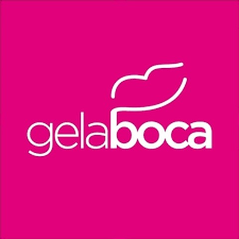
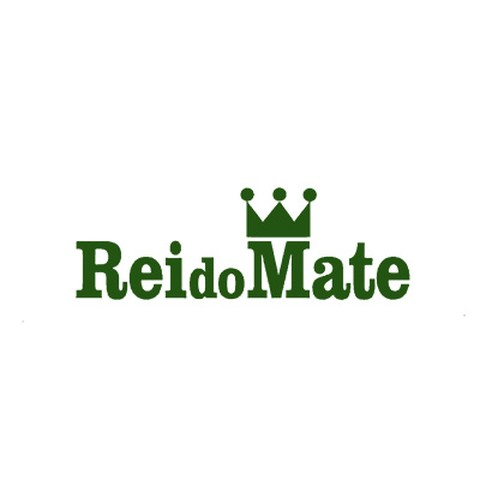
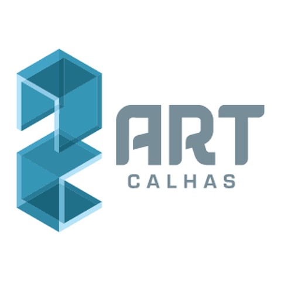
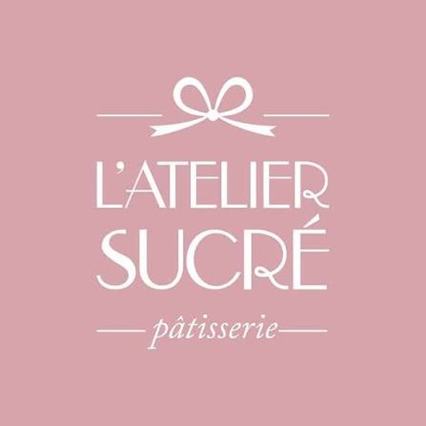
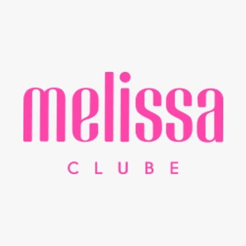

Resultados que constroem confiança.
Uma trajetória feita de pessoas, empresas e oportunidades conectadas com cuidado, método e proximidade.
100
Contratações efetivas
Talentos conectados às empresas certas, com foco em cultura e resultado.
200
Estagiários administrados
Gestão completa do estágio, do contrato ao acompanhamento.
50
Estagiários efetivados
Jovens que viraram profissionais dentro das empresas onde estagiaram.
30
Empresas atendidas
Negócios de diferentes segmentos que confiam na nossa parceria.
Cada número tem um rosto e uma história.
Por trás de cada contratação, existe uma empresa que encontrou o profissional certo e uma pessoa que ganhou uma oportunidade de crescer. Por trás de cada estágio, há um jovem dando seus primeiros passos com segurança e acompanhamento.
É esse olhar humano, somado a processos bem estruturados, que nos faz crescer junto com os nossos clientes.

Empresas que confiam na Radices.
Alguns dos negócios que caminham com a gente na construção de equipes mais fortes.





Quem contrata, recomenda.
“Experiência sempre incrível. Atendimento super personalizado e profissionais sempre prontos para a demanda!”
“Foi uma experiência incrível, foi excelente o atendimento e serviço prestado.”
“Prestativos, atenciosos e entendem o que realmente o cliente está buscando.”
“Profissionais excelentes, material de apoio completo com detalhes do perfil do candidato. Agilidade no processo e acompanhamento integral das demandas, tanto nas orientações, perfil e conclusão do processo.”
“Excelente empresa, a parceria trouxe para nossa empresa muita comodidade e ganho de tempo nas contratações. Vale muito a pena. Recomendo.”
“Nos surpreendeu encontrando os melhores colaboradores que já passaram pela empresa. Obrigado!”
“Atendimento excelente! A empresa de RH foi ágil, muito atenciosa durante todo o processo, muito dedicados. Recomendo sem dúvidas!”
Sua empresa pode ser a próxima.
Converse com a Radices e descubra como podemos ajudar a contratar melhor e a cuidar do seu time.